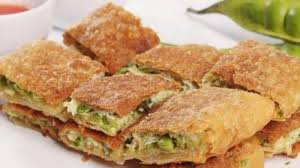
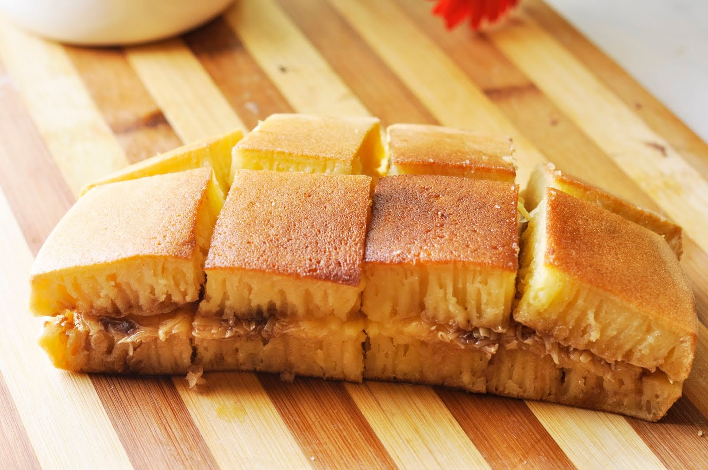

Bahan dan Bumbu Resep Martabak Telur
 1. Bahan utama yang dibutuhkan adalah tepung terigu yang mempunyai kandungan protein sedang kurang lebih
sebanyak 200 gram saja (bahan kulit martabak).
2. Garam dapur beryodium secukupnya atau kurang lebih
sebanyak seperempat sampai setengah
sendok kecil atau sendok teh.
3. Air bersih secukupnya atau kurang lebih sebanyak 140 ml.
4.
Telur ayam 1 butir untuk membuat kulit martabaknya.
5. Minyak secukupnya untuk menggoreng
martabaknya nanti dan 50 gram minyak untuk
campuran bahan adonan kulitnya.
6. Daging sapi cincang kecil kecil atau bisa juga menggunakan daging giling kurang lebih sebanyak
200-250 gram saja.
7. Daun bawang segar kualitas bagus kurang lebih sebanyak 3-5 batang ukuran
sedang besar. Cuci bersih sebelum
digunakan dan iris halus halus untuk isi martabaknya.
8. Bawang putih ukuran sedang besar sebanyak
4 pcs. Kupas kulitnya lalu cincang bawang putihnya sampai benar benar halus untuk bahan isi
martabak.
9. Bawang bombay ukuran sedang
besar kualitas bagus sebanyak 1 buah pcs saja. Kupas kulitnya lalu iris halus untuk isi martabak.
10. Bawang merah lokal ukuran sedang besar kurang lebih sebanyak 8 pcs. Kupas kulitnya lalu iris iris
halus/rajang untuk bahan isian
martabaknya nanti.
11. Lada bubuk atau halus secukupnya sesuai selera atau kurang lebih sebanyak
setengah sendok kecil.
12. Garam dapur beryodium dan bumbu penyedap rasa secukupnya.
13. Telur
bebek atau telur ayam secukupnya
atau kurang lebih sebanyak 4 pcs untuk membuat adonan diatas (1-2 butir per porsi).
Resep Bahan Martabak manis
1. 125 gram tepung terigu protein sedang
2. 180 ml air matang
3. 4 sendok makan margarin
4. 3 sendok makan gula pasir
5. 2 sendok makan susu bubuk (opsional)
6. 1 butir telur ayam
7. 1/4 sendok teh ragi instan (fermipan)
8. 1/2 sendok teh baking powder
9. susu kental manis secukupnya